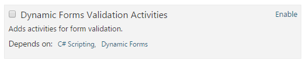
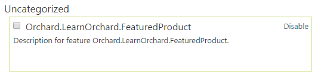

第4部分：应用最佳实践-Part 4: Applying Best Practices
Introduction
介绍
This is part four of a four part course. It will get you started with a gentle introduction to extending Orchard at the code level. You will build a very simple module which contains a widget that shows an imaginary featured product.
这是四部分课程的第四部分。它将帮助您轻松介绍在代码级别扩展Orchard。您将构建一个非常简单的模块，其中包含一个显示虚构特色产品的小部件。
It will teach you some of the basic components of module development and also encourage you to use best-practices when developing for Orchard.
它将教您模块开发的一些基本组件，并鼓励您在开发Orchard时使用最佳实践。
If you haven't read the previous parts of this course then you can go back to the overview to learn about the Getting Started with Modules course.
如果您还没有阅读本课程的前几部分，那么您可以回到概述[了解模块入门课程]（模块入门）。
This final part will look at applying some best practices to improve the quality of the module's codebase.
最后一部分将介绍如何应用一些最佳实践来提高模块代码库的质量。
What's left to do
还剩下什么
So far in the course we have covered a pretty impressive list of topics. You might be tempted to think that the items in this last part are extras but just because we saved them until last doesn't mean they aren't important.
到目前为止，我们已经涵盖了一个非常令人印象深刻的主题列表。您可能会想到最后一部分中的项目是额外的，但仅仅因为我们将它们保存到最后并不意味着它们并不重要。
In fact, the only reason these weren't covered earlier was because they aren't essential to being able to load up the module in Orchard and there was already plenty to discuss. Your module is not really complete though until you've incorporated these techniques into your development process.
事实上，之前没有涉及的唯一原因是因为它们对于能够在Orchard中加载模块并不是必不可少的，而且已经有很多要讨论的内容。在您将这些技术融入开发过程之前，您的模块并不完整。
The topics in this article will help you add polish to your module and if you're going to release them to the public it will mean the difference between a beginners module and a professional module.
本文中的主题将帮助您为模块添加润色，如果您要将它们发布给公众，则意味着初学者模块和专业模块之间的区别。
Customize the manifest file
自定义清单文件
Starting with an easy one, the Module.txt is a text file you will find in the root of your module folder. We have already looked at this file briefly in this course each time we have added dependencies. When Orchard is scanning the folders looking for modules to load it will parse this file to get information about it.
从一个简单的开始，Module.txt是一个文本文件，您可以在模块文件夹的根目录中找到它。每次我们添加依赖项时，我们已经在本课程中简要地查看了这个文件。当Orchard扫描文件夹寻找要加载的模块时，它将解析此文件以获取有关它的信息。
The Module.txt is a manifest file. Technically, the document is in YAML format. If you open it now you will see the following:
Module.txt是一个清单文件。从技术上讲，该文件采用YAML格式。如果您现在打开它，您将看到以下内容：
Name: Orchard.LearnOrchard.FeaturedProduct
AntiForgery: enabled
Author: The Orchard Team
Website: http://orchardproject.net
Version: 1.0
OrchardVersion: 1.0
Description: Description for the module
Features:
Orchard.LearnOrchard.FeaturedProduct:
Description: Description for feature Orchard.LearnOrchard.FeaturedProduct.
The Name field at the top is a friendly text name that's displayed to the user. For example the Name field for the module in the screenshot below reads Dynamic Forms Validation Activities:
顶部的“名称”字段是一个友好的文本名称，显示给用户。例如，下面屏幕截图中模块的Name字段显示为Dynamic Forms Validation Activities：

AntiForgery enables the XSS injection protection so you should have this set to enabled unless you have a specific reason to manage this yourself.
The file format is quite straightforward. The fields mean what you would expect them to mean.
文件格式非常简单。这些字段意味着你所期望的意思。
Version is the version of the module.
OrchardVersion is the version of Orchard that this module was tested against.
Features is the only complicated one. We didn't look at it in this course, but you can include several features within a single module. This means you can enable or disable individual parts of the module. The description field and features section work together and can be displayed in several different formats.
For a detailed explanation of the Features section and the other fields read the manifest files guide.
有关“功能”部分和其他字段的详细说明[阅读清单文件指南]（清单文件）。
Time to make some changes:
是时候做一些改变了：
- Open
Module.txt.
1.打开Module.txt。
- Edit the
Module.txtto your liking while staying within the spec. Go ahead and put your name and details into it. It feels good to see your name in lights!
1.根据自己的喜好编辑Module.txt，同时保持[在规范内]（清单文件）。来吧，把你的名字和细节放进去吧。在灯光下看到你的名字真是太好了！
- Save the file.
1.保存文件。
You will probably need to restart the development server before Orchard picks up the changes you've made to your Module.txt.
在Orchard获取您对Module.txt所做的更改之前，您可能需要重新启动开发服务器。
Categorize your module
对模块进行分类
While we are working with the manifest file, there is one field which is very useful but not included by default in the Module.txt. The field is called Category:.
当我们使用清单文件时，有一个字段非常有用，但默认情况下不包含在Module.txt中。该字段称为“类别：”。
If you omit this field then the module defaults to the Uncategorized grouping:
如果省略此字段，则模块默认为“Uncategorized”分组：

When developing your own modules you should first check the Modules section of the admin dashboard to see if your module would sit well in one of the existing common categories.
在开发自己的模块时，首先应检查管理仪表板的“模块”部分，看看您的模块是否能够很好地存在于现有的常见类别中。
It's better to group your module with other modules where possible so that users can find related modules easily.
最好将模块与其他模块分组，以便用户可以轻松找到相关模块。
In this case we will make our own category, "Learn Orchard", which is the category used for all demo modules on this site:
在这种情况下，我们将创建自己的类别“Learn Orchard”，这是用于本网站上所有演示模块的类别：
- Open
Module.txt.
1.打开Module.txt。
- Add the following line to the file:
1.将以下行添加到文件中：
Category: Learn Orchard
It doesn't matter where you put it in this case because we are only defining a single feature. In the future if your module supports multiple features then you should add in the relevant category to each feature.
- Save the file.
1.保存文件。
You will probably need to restart the development server before Orchard picks up the changes you've made to your Module.txt.
在Orchard获取您对Module.txt所做的更改之前，您可能需要重新启动开发服务器。
Localize all of your text
本地化所有文本
Orchard has great support for writing global aware, localized websites. Administrators can add cultures to their site for a wide variety of different languages.
Orchard非常支持编写全球知名的本地化网站。管理员可以为其网站添加各种不同语言的文化。
This means that as a module developer you can't know ahead of time what language your module will be used in. Orchard makes it possible for you to support this scenario by wrapping all of your text in a T() method.
这意味着作为模块开发人员，您无法提前知道您的模块将使用哪种语言.Orchard使您可以通过将所有文本包装在T（）方法中来支持此方案。
Every string that you display in Orchard should be passed through the T() method.
您在Orchard中显示的每个字符串都应该通过T（）方法传递。
When you are working with Razor views the T() is automatically available. So, for example, this snippet from the FeaturedProduct.cshtml view would change from:
当您使用Razor视图时，T（）自动可用。因此，例如，来自FeaturedProduct.cshtml视图的此片段将更改为：
<p class="sale-red">ON SALE!</p>
Over to:
到：
<p class="sale-red">@T("ON SALE!")</p>
If you need to inject variables into the string then you should use String.Format() style formatting. Don't try to concatenate them. For example, if you had a snippet that looked like this:
如果需要将变量注入字符串，则应使用String.Format（）样式格式。不要试图连接它们。例如，如果您有一个如下所示的代码段：
<p>Today's featured product is the @Model.ProductName.</p>
The correct way to format this would be:
格式化的正确方法是：
<p>@T("Today's featured product is the {0}.", @Model.ProductName)</p>
Don't use concatenation because the position of the variable might change in different translations.
不要使用连接，因为变量的位置可能会在不同的翻译中发生变化。
This is BAD:
这是不好的**：
<p>@T("You have ") + @Model.SmsCredits + @T(" credits left.")</p>`
@T（“你有”）+ @ Model.SmsCredits + @T（“学分左”。）
This is GOOD:
这是好：
<p>@T("You have {0} credits left.", @Model.SmsCredits)</p>`
@T（“你剩下{0}学分。”，@ Model.SmsCredits）
Let's update the front-end view so that it follows the correct localized development best practices:
让我们更新前端视图，使其遵循正确的本地化开发最佳实践：
- Open
.\Views\Parts\FeaturedProduct.cshtml
1.打开。\\ Views \\ Parts \\ FeaturedProduct.cshtml
- Wrap each of the four blocks of text in their own
@T()calls:
1.在他们自己的@T（）调用中包装四个文本块中的每一个：
@if (Model.ContentPart.IsOnSale) {
<p class="sale-red">@T("ON SALE!")</p>
}
<p>@T("Today's featured product is the Sprocket 9000.")</p>
@if (!Model.IsOnFeaturedProductPage) {
<p><a href="~/sprocket-9000" class="btn-green">
@T("Click here to view it.")
</a></p>
} else {
<p class="box-purple">@T("Read more about it on this page.")</p>
}
In the model class we used the [DisplayName] attribute on the IsOnSale property. The [DisplayName] is an ASP.NET MVC attribute which allows you to automatically inject a descriptive label into your UI.
在模型类中，我们在IsOnSale属性上使用了[DisplayName]属性。 [DisplayName]是一个ASP.NET MVC属性，允许您自动将描述性标签注入UI。
Unfortunately Orchard's localization system doesn't intercept this information so when creating localized labels we need to pass the display name in each time.
不幸的是，Orchard的本地化系统不会拦截这些信息，因此在创建本地化标签时，我们需要每次都传递显示名称。
There is a pull request currently being discussed for this issue which will hopefully bring in a
[LocalizedDisplayName()]attribute that will solve this issue.有[拉请求]（https://github.com/OrchardCMS/Orchard/pull/5683）目前正在讨论这个问题，希望能带来一个解决这个问题的
[LocalizedDisplayName（）]属性。
To localize the label with our [DisplayName] text we need to pass an extra parameter in to the @Html.LabelFor() so. This would look something like this:
要使用我们的[DisplayName]文本本地化标签，我们需要将一个额外的参数传递给@ Html.LabelFor（）。这看起来像这样：
@Html.LabelFor(model => model.IsOnSale, T("Is the featured product on sale?"))
However, this kind of duplication of the text is not a best practice. Instead there is a way to pull the [DisplayName] attribute text in and pass it through the T() and into the LabelFor():
但是，这种文本的重复并不是最佳实践。相反，有一种方法可以将[DisplayName]属性文本拉入并通过T（）并传递给LabelFor（）：
- Open
.\Views\EditorTemplates\Parts\FeaturedProduct.cshtml
1.打开。\\ Views \\ EditorTemplates \\ Parts \\ FeaturedProduct.cshtml
- Find the call to
LabelFor:
2.找到对LabelFor的调用：
@Html.LabelFor(model => model.IsOnSale)
And replace it with:
@Html.LabelFor(model => model.IsOnSale,
T(Html.DisplayNameFor(model => model.IsOnSale).ToHtmlString()))
Localization is an important topic in Orchard. Read the using the localization helpers and the creating global ready applications guides for more detailed information about supporting this feature.
本地化是Orchard的一个重要主题。阅读[使用本地化帮助程序]（使用本地化帮助程序）和[创建全局就绪应用程序]（创建全局就绪应用程序）指南，以获取有关支持此功能的更多详细信息。
Your styles shouldn't be inline
你的风格不应该是内联的
Hopefully this one should have raised some alarm bells as you were doing this - having a <style> tag in the view is not a good HTML practice. You should always put your CSS into an external .css file. This allows the browser to download the file once for each the sites and keep it cached for subsequent requests.
希望这个应该引发一些警钟，因为你在做这个 - 在视图中有一个<style>标签不是一个好的HTML练习。您应该始终将CSS放入外部.css文件中。这允许浏览器为每个站点下载一次文件，并为后续请求缓存它。
However, just putting the styles into an external file is not the whole story with Orchard. It provides two techniques to help you include scripts and styles within your view.
但是，将样式放入外部文件并不是Orchard的全部故事。它提供了两种技术来帮助您在视图中包含脚本和样式。
The quick fix for this is to move the CSS into a .css file and then use Script.Require("filename.css") to include it:
对此的快速解决方法是将CSS移动到.css文件中，然后使用Script.Require（“filename.css”）来包含它：
- In the Solution Explorer, right click on the
Stylesfolder within the module.
1.在解决方案资源管理器中，_right单击模块中的Styles文件夹。
- Choose Add, New Item... from the context menu.
1.从上下文菜单中选择添加，新项目... 。
- Select Visual C# then Web from the categories down the left hand side.
1.从左侧的类别中选择 Visual C＃然后 Web 。
- Find Style Sheet in the list and give it a Name: of
FeaturedProduct.css.
1.在列表中找到样式表并给它一个名称：“FeaturedProduct.css”。
- Click Add.
1.单击添加。
- Open
.\Views\Parts\FeaturedProduct.cshtml.
1.打开。\\ Views \\ Parts \\ FeaturedProduct.cshtml。
- Copy the css content from within the
<style>tag (don't include the<style>tag itself) and drop it into theFeaturedProduct.cssstyle sheet.
1.从*